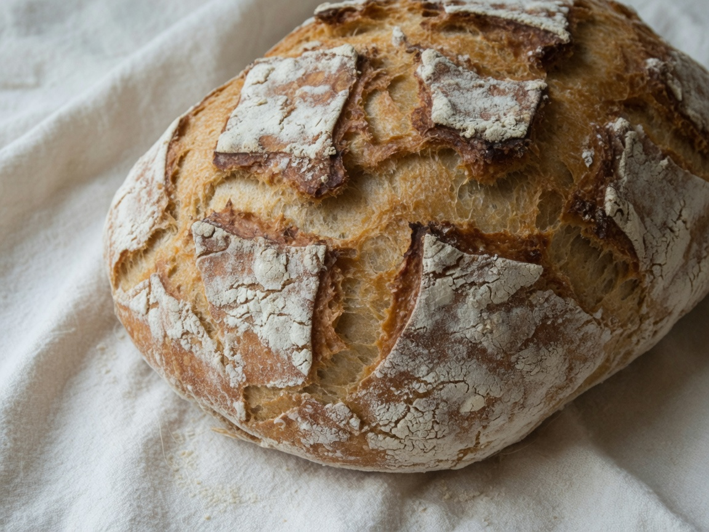
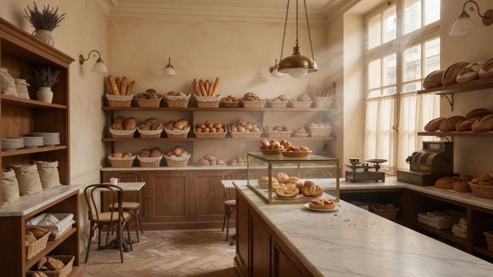
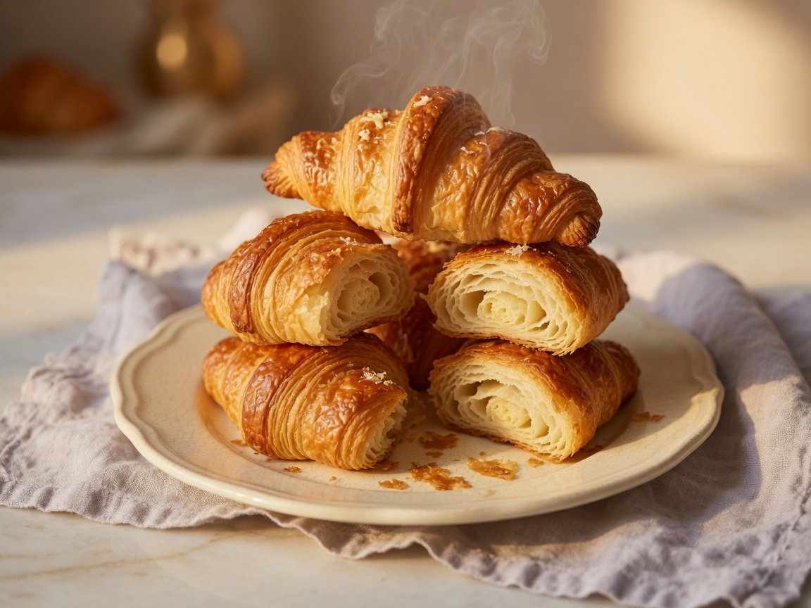
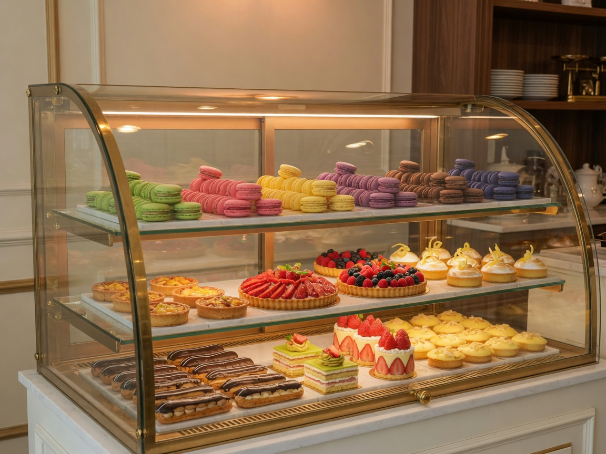
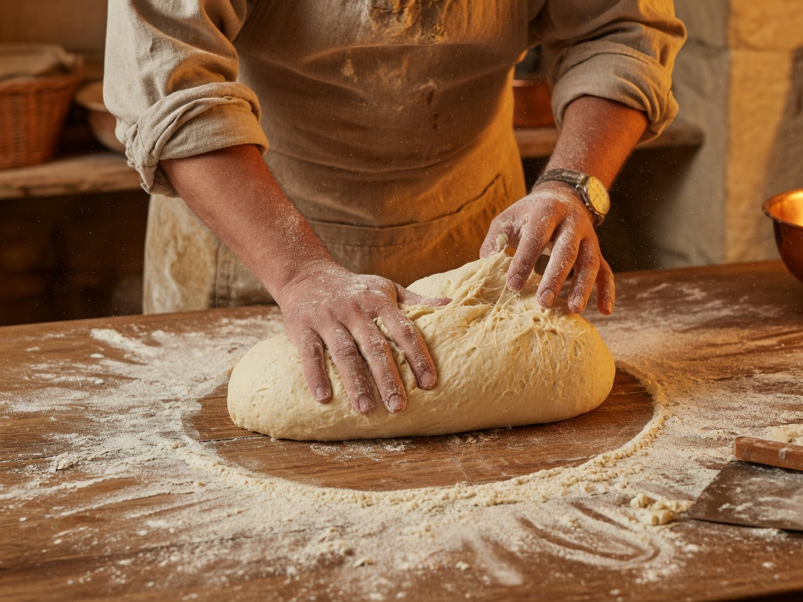
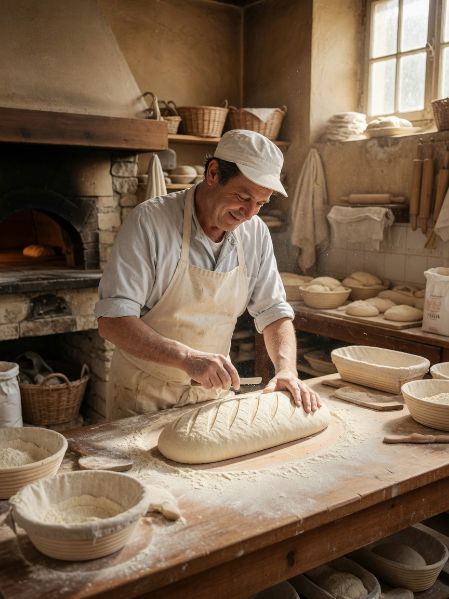
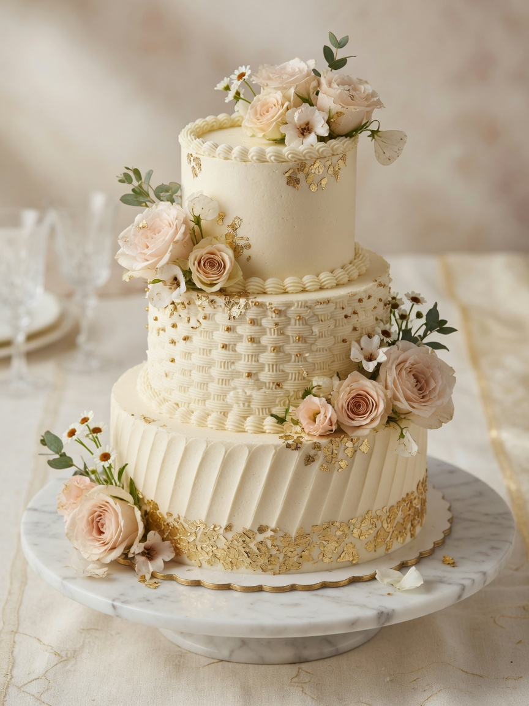

À partir de 4,80 €
Pains au levain
Mie alvéolée, croûte caramélisée, farines de meule : baguette tradition, tourte de seigle, pain de campagne.
DécouvrirArtisan boulanger-pâtissier · Paris 7e
Farines sélectionnées, levain maison et four à sole : des créations gourmandes où tradition artisanale et exigence contemporaine se rencontrent.

La maison
Maison Farine cultive un artisanat exigeant : pains de caractère, viennoiseries dorées et pâtisseries raffinées, façonnés chaque jour au fournil.
Située rue du Bac, notre boutique accueille une clientèle fidèle dans une ambiance chaleureuse, entre bois, lin et parfum de beurre. Ici, chaque fournée raconte une histoire de farine, de temps et de feu.
Sélection du fournil
Une carte courte, travaillée chaque jour : pains de caractère, viennoiseries au beurre et pâtisseries de saison.

Mie alvéolée, croûte caramélisée, farines de meule : baguette tradition, tourte de seigle, pain de campagne.
Découvrir
Croissants feuilletés, pains au chocolat, brioches et chaussons aux pommes — beurre AOP Charentes-Poitou.
Découvrir
Tartes aux fruits, éclairs, entremets et biscuits fins — une vitrine qui change au fil des saisons.
DécouvrirSavoir-faire
Aucun additif, aucun accélérateur : le temps fait le travail. Nos artisans pétrissent, façonnent et cuisent selon des gestes transmis et perfectionnés.
Le levain est nourri à l'aube. Les pâtes reposent plusieurs heures. Les croissants sont tourés à la main. Chaque fournée sort du four à sole pour une croûte dorée et une mie aérienne — le goût d'un vrai fournil parisien.


Instants gourmands
Pains, viennoiseries, vitrine et fournil — un aperçu de notre quotidien artisanal.

Sur mesure
Mariages, anniversaires, cocktails d'entreprise : nous créons des pièces montées et gâteaux d'exception à votre image.
De l'esquisse à la livraison, notre pâtissier conçoit des desserts élégants — entremets, wedding cakes, plateaux de mignardises — avec des saveurs raffinées et une finition soignée.
Notre promesse
Des filières courtes, des labels de qualité et une exigence constante sur chaque ingrédient.
Blés de meule, farines T65 et T80 issues de moulins partenaires en France.
Beurre Charentes-Poitou AOP pour des viennoiseries croustillantes et parfumées.
Fermentation longue, aucun additif de panification pour un goût authentique.
Fruits et garnitures selon le calendrier — fraises, agrumes, châtaignes…
Ils en parlent
« Le meilleur croissant du 7e. Croustillant, beurré sans être lourd — on revient chaque dimanche. »
« Notre wedding cake était sublime — élégant, délicieux, et l'équipe a été d'une disponibilité rare. »
« Le pain de campagne tient toute la semaine. Une boulangerie qui a encore du sens — bravo à l'équipe. »
Venez nous rendre visite — le fournil s'éveille dès l'aube.
18 rue du Bac
75007 Paris, France
Pains, viennoiseries, pâtisseries et commandes sur mesure — explorez la carte ou contactez le fournil pour un événement.